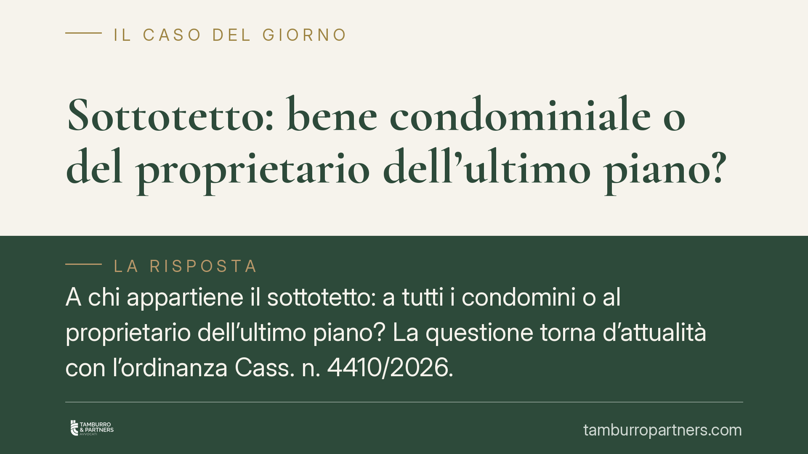

Sottotetto: bene condominiale o del proprietario dell'ultimo piano?
A chi appartiene il sottotetto: a tutti i condomini o al proprietario dell'ultimo piano? La questione torna d'attualità con l'ordinanza Cass. n. 4410/2026. La risposta non è automatica: dipende dai titoli d'acquisto e dalla funzione concreta del vano. Capire i criteri serve a evitare controversie su spese, usi e opere.

Il problema: una proprietà non scontata
Il sottotetto è lo spazio compreso tra l'ultimo solaio e il tetto dell'edificio. La sua natura giuridica è tra le più controverse in materia condominiale, perché il bene può assumere funzioni diverse a seconda di come è stato costruito e utilizzato.
Non esiste una regola valida per tutti gli edifici. La proprietà del sottotetto va stabilita caso per caso, incrociando i documenti d'acquisto con le caratteristiche fisiche del vano.
Inquadramento normativo
L'art. 1117 cod. civ. elenca le parti comuni dell'edificio e pone una presunzione di comunione: i beni ivi indicati appartengono a tutti i condomini, salvo titolo contrario. Il problema è che il sottotetto non è menzionato espressamente nell'elenco.
Questa assenza ha una conseguenza precisa sul piano probatorio: la comunione del sottotetto non è presunta per legge. La sua natura resta quindi residuale e interpretativa, da ricostruire in concreto. Non basta invocare l'art. 1117 c.c. per affermarne la condominialità; occorre dimostrare che il vano svolge una funzione comune o che i titoli ne attribuiscono la contitolarità.
Il primo criterio è sempre il titolo d'acquisto. Se gli atti di provenienza (rogiti, regolamento di natura contrattuale, atto di divisione) riservano il sottotetto all'ultimo piano o, al contrario, lo includono tra le parti comuni, la questione è risolta. In mancanza di un titolo chiaro, entrano in gioco gli indici concreti elaborati dalla giurisprudenza di legittimità, da ultimo richiamati da Cass., ord. n. 4410/2026.
Gli indici concreti
In assenza di titolo decisivo, la Cassazione valuta la funzione oggettiva del vano attraverso tre indici:
- Funzione di isolamento. Se il sottotetto serve esclusivamente a proteggere l'appartamento sottostante dal caldo, dal freddo e dall'umidità, è pertinenza di quell'unità immobiliare. È un vano tecnico al servizio dell'ultimo piano.
- Altezza e struttura. Se il vano ha dimensioni e caratteristiche tali da consentirne un uso autonomo (deposito, stenditoio, locale abitabile o trasformabile), è più probabile che costituisca bene suscettibile di utilizzo comune.
- Accesso. Un accesso raggiungibile solo dall'appartamento dell'ultimo piano depone per la proprietà esclusiva. Un accesso dalle scale o dai vani comuni depone per la condominialità.
Questi indici non operano in modo rigido: il giudice li valuta nel loro insieme, con prevalenza del dato funzionale.
Chi deve provare cosa
Il punto delicato riguarda l'onere della prova. Poiché il sottotetto non rientra nell'elenco dell'art. 1117 c.c., non opera a suo favore la presunzione di comunione. Chi afferma la condominialità deve dimostrarla, provando che il vano ha funzione o uso comune, oppure che i titoli ne prevedono la contitolarità.
Specularmente, il proprietario dell'ultimo piano che rivendica la titolarità esclusiva ha interesse a documentare la funzione di isolamento, l'accesso riservato e, ove ne ricorrano i presupposti, il possesso continuato, pacifico, pubblico e non interrotto per vent'anni ai fini dell'usucapione (artt. 1158 e 1163 cod. civ.). Attenzione: l'usucapione presuppone un possesso a titolo di proprietario, non il semplice uso tollerato del vano.
Implicazioni pratiche
La qualificazione incide direttamente su due profili.
Sul riparto delle spese: se il sottotetto è comune, le spese di manutenzione seguono i criteri dell'art. 1123 cod. civ., in proporzione ai millesimi o all'uso. Se è pertinenza privata, gravano sul solo proprietario.
Sugli interventi e le trasformazioni: il condomino non può modificare, chiudere o trasformare un sottotetto comune senza il consenso degli altri; viceversa, il proprietario esclusivo può intervenire nei limiti urbanistici e statici dell'edificio.
È utile distinguere sempre tra proprietà e mero uso: un condomino può utilizzare di fatto il vano senza esserne proprietario, e questo uso prolungato non trasferisce la titolarità se manca un possesso qualificato.
Cosa fare in concreto
- Recuperate i titoli d'acquisto e il regolamento condominiale, verificando se contengono clausole sulla proprietà del sottotetto.
- Documentate le caratteristiche fisiche del vano: altezza, accesso, presenza di impianti, destinazione attuale.
- Prima di eseguire opere, accertate la natura del bene: un intervento su parte comune senza consenso espone a responsabilità e a ordine di ripristino.
- In caso di contenzioso, raccogliete prove documentali e fotografiche degli indici concreti e dell'eventuale possesso.
- Verificate il testo integrale dell'ordinanza n. 4410/2026 sulla banca dati CED della Cassazione prima di fondarvi su massime di sintesi.
Conclusione
Non esiste una presunzione automatica di condominialità del sottotetto. La proprietà si stabilisce dai titoli e, in subordine, dalla funzione concreta del vano, con onere probatorio a carico di chi ne afferma la natura comune. È opportuno far esaminare titoli e indici concreti prima di assumere decisioni su spese o interventi.
---
*Contributo informativo a cura di Tamburro & Partners Avvocati - Avv. Giuseppe Tamburro. Non costituisce parere legale.*
Ogni condominio ha una storia a sé.
Se gestisci un'amministrazione e vuoi un confronto su una specifica questione condominiale, scrivi allo studio. Ti rispondiamo entro un giorno lavorativo.